Tema 3.B.42
Las relaciones económicas exteriores de la Unión Europea. La política de cooperación al desarrollo de la Unión Europea.
Acción exterior de la UE: peso y papel internacional del euro, competencias, OMC, FMI y G-20, ampliación, vecindad, sanciones, socios y ayuda al desarrollo.
Exclusivo Material exclusivo de victorgutierrezmarcos.es y la app Oposición TCEE · DCE. Puedes usarlo libremente para tu estudio personal. No se autoriza su incorporación a otras plataformas, aplicaciones o servicios. Condiciones de uso.
Introducción
Enganche:
«Más vale vecino cercano que hermano lejano», dice el refrán. En 2025 la Unión Europea lo comprobó con su aliado de siempre: Estados Unidos le impuso un arancel del 15 % a la mayoría de sus exportaciones y recortó su ayuda al desarrollo a menos de la mitad.
Ese mismo año la Unión siguió siendo el primer donante del mundo, presentó un Pacto por el Mediterráneo con sus vecinos del Sur y se preparó para abrir las negociaciones de adhesión con Ucrania y Moldavia, que empezaron en 2026.
La pregunta que recorre la exposición es: ¿para qué usa la Unión su peso económico fuera de sus fronteras, y le basta con comerciar para ser un actor en el mundo?
Relevancia:
Es una potencia económica: la Unión es la segunda economía del mundo a tipos de cambio de mercado, el primer exportador e importador de servicios, el segundo de bienes y el primer socio comercial de unos 80 países.
Es la primera potencia de la ayuda: el Equipo Europa (Team Europe), la Unión con sus Estados miembros, da la mitad de la ayuda oficial al desarrollo de los países donantes de la OCDE.
Para España: sus relaciones con el Mediterráneo y con América Latina pasan en buena parte por Bruselas, y su propia cooperación se coordina con la de la Unión [ver tema 4.A.26].
Contextualización:
Qué son: las relaciones económicas exteriores de la Unión son el conjunto de políticas con las que se relaciona con terceros países y organizaciones. No hay una sola política, sino varias: la comercial, la de ampliación, la de vecindad, la cooperación al desarrollo, la ayuda humanitaria, la ayuda macrofinanciera y las sanciones, más la representación exterior del euro.
Cómo se reparten las competencias: la política comercial es exclusiva de la Unión; la cooperación al desarrollo y la ayuda humanitaria son competencias paralelas, que ejercen a la vez la Unión y los Estados; la política exterior y de seguridad común (PESC) se decide casi siempre por unanimidad [ver tema 3.B.36].
El objeto de esta exposición: el marco, la geografía y los socios de esas relaciones y, con detalle, la cooperación al desarrollo. La política comercial tiene su propio tema [ver tema 3.B.41], y la financiación del desarrollo en general, también [ver tema 3.B.29].
Problemática:
¿Cuánto pesa la Unión en el mundo, por qué actúa fuera en común y con qué reglas, actores e instrumentos?
¿Por qué trata de forma distinta a sus candidatos, a sus vecinos y a sus grandes socios, y le funciona?
¿Qué hace la Unión por el desarrollo, con qué dinero y con qué resultados?
Estructura:
La exposición va de lo general a lo particular, y del mundo a los países más pobres (figura 1):
I. Visión global (I): el peso económico de la Unión, con el papel internacional del euro; por qué actúa fuera en común, con qué competencias, reglas, actores e instrumentos y cómo ha evolucionado; y su lugar en las organizaciones y foros internacionales.
II. Visión regional (II): la economía como instrumento geoestratégico (la ampliación, la vecindad y las sanciones) y los grandes socios, con los retos de la acción exterior.
III. La cooperación al desarrollo (III): los conceptos y el sistema internacional de la ayuda, y la política de la Unión: relevancia, justificación y marco, evolución, instrumentos y retos.
El orden sigue el de cualquier política de la Unión: por qué importa, por qué se hace en común y con qué reglas, cómo ha evolucionado, cómo se articula y qué retos tiene. En el bloque I se aplica a las relaciones exteriores en su conjunto, en el II se ve su articulación por regiones y en el III, entera, a la cooperación al desarrollo.
3.B.42. Relaciones económicas exteriores y cooperación al desarrollo de la UE
Introducción2′30″
I. Visión global: peso, marco y organizaciones8′30″
1. El peso económico de la Unión en el mundo
2. La justificación y el marco jurídico e institucional
3. Las organizaciones y foros internacionales
II. Visión regional: vecinos, socios y rivales10′
1. La economía como instrumento geoestratégico
2. El movimiento de bienes y factores: los grandes socios
III. La política de cooperación al desarrollo7′30″
1. Consideraciones generales
2. La Unión Europea y la ayuda al desarrollo
Conclusión1′30″
Mapa de la exposición (para consultar; no se canta). La pregunta de cada bloque, lo que se cuenta en él, el hilo que lleva al siguiente y dónde está cada pieza de la fórmula común de las políticas de la Unión.
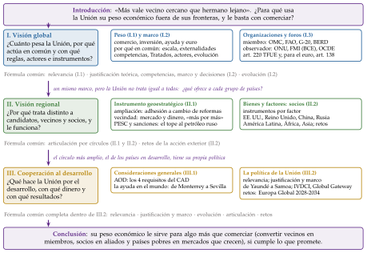
Fuente: elaboración propia.
Siglas. TUE y TFUE: Tratado de la Unión Europea y Tratado de Funcionamiento de la Unión Europea; AOD: ayuda oficial al desarrollo; CAD: Comité de Ayuda al Desarrollo de la OCDE; RNB: renta nacional bruta; AR: Alta Representante de la Unión para Asuntos Exteriores y Política de Seguridad; SEAE: Servicio Europeo de Acción Exterior; PESC: política exterior y de seguridad común; IVDCI: Instrumento de Vecindad, Desarrollo y Cooperación Internacional; BEI y BERD: Banco Europeo de Inversiones y Banco Europeo de Reconstrucción y Desarrollo.
I. Visión global: peso, marco y organizaciones
Empezamos por lo común a todas las relaciones exteriores: cuánto pesa la Unión, por qué actúa fuera en común, con qué reglas y dónde se sienta.
Conclusión anticipada: la Unión pesa mucho en el comercio, la inversión, la ayuda y la moneda, y actúa fuera con muchas manos (la Comisión, el Consejo, la Alta Representante, el BCE y 27 Estados) y casi solo con instrumentos económicos: el acceso a su mercado, sus normas, su dinero y su moneda. Ese es su poder, y también su límite.
I.1. El peso económico de la Unión en el mundo
El peso de la Unión se mide con 4 indicadores: lo que comercia, lo que invierte, lo que da y el uso de su moneda. Son, a la vez, la relevancia de su acción exterior y sus palancas.
I.1.1. Comercio e inversión
La producción: la Unión tiene unos 450 millones de habitantes, el 5,5 % de la población mundial, y en 2025 produjo el 17,9 % del PIB mundial a tipos de cambio de mercado, por detrás de Estados Unidos (26,0 %) y por delante de China (16,5 %); en paridad de poder adquisitivo, el 14,0 %.
El comercio (2025, sin el comercio entre sus Estados): es el segundo exportador de bienes del mundo (13,8 %, tras China) y el segundo importador (12,9 %, tras Estados Unidos), y el primer exportador e importador de servicios comerciales (en torno al 22,7 % del total). Es el primer socio comercial de unos 80 países.
En bienes, sus 3 grandes socios son Estados Unidos, China y el Reino Unido (gráfico 1): Estados Unidos es el primer cliente y China, el primer proveedor, con un superávit europeo de unos 197.000 millones de euros con el primero y un déficit de unos 375.000 millones con el segundo en 2025.
En servicios, Estados Unidos, el Reino Unido y Suiza.
La inversión: a finales de 2024, las empresas de la Unión tenían 9,3 billones de euros invertidos fuera de ella, casi un 30 % en Estados Unidos, y las de fuera, 7,0 billones en la Unión.
El grado de apertura: el comercio exterior de bienes y servicios de la Unión con el resto del mundo equivale a más de un tercio de su PIB, más que en Estados Unidos, lo que la hace más sensible a las tensiones comerciales y le da más interés en un sistema multilateral basado en reglas [ver tema 3.B.33].
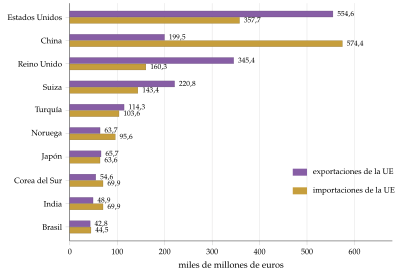
Fuente: elaboración propia a partir de Eurostat. Comercio extracomunitario de la UE-27.
I.1.2. Ayuda
El primer donante: los Estados de la Unión dieron en 2025 la mitad de la AOD de los países del CAD, y las instituciones de la Unión, otros 23.100 millones de euros; el detalle está en el bloque de la cooperación (III.2).
Más que ayuda: la Unión es también el primer donante de ayuda humanitaria del mundo con sus Estados y, con Global Gateway, uno de los grandes financiadores de infraestructuras en los países en desarrollo, en competencia con China.
I.1.3. Moneda: el papel internacional del euro
Qué es una moneda internacional: la que se usa fuera de su zona para cumplir las 3 funciones del dinero [ver tema 3.A.35]:
los agentes privados la usan como unidad de cuenta para facturar, como medio de pago y como depósito de valor para ahorrar o endeudarse;
los gobiernos la usan como ancla de su tipo de cambio, para intervenir en los mercados de divisas y como reserva.
Sus determinantes: una moneda gana uso internacional con 4 condiciones, y en las 2 primeras el euro compite con el dólar:
el peso de la zona emisora en la producción y el comercio mundiales: la zona del euro produce en torno al 15 % del PIB mundial y es uno de los 3 grandes bloques comerciales;
la confianza en la estabilidad de su valor: un banco central independiente con un objetivo de inflación del 2 % y unas reglas fiscales comunes;
las externalidades de red: cuantos más la usan, más útil es, lo que da mucha inercia a la moneda dominante (la libra tardó décadas en ceder ante el dólar);
la profundidad y la liquidez de sus mercados financieros y un activo seguro abundante, el punto débil del euro: no hay un bono común tan grande como el del Tesoro estadounidense y los mercados de capitales siguen fragmentados [ver tema 3.B.44].
Ventajas para la Unión:
señoreaje internacional: el resto del mundo acepta billetes y deuda en euros a cambio de bienes reales, y paga por ellos un tipo de interés menor;
menos riesgo cambiario y menos costes de transacción para las empresas que facturan y se financian en euros;
autonomía y peso geopolítico: la capacidad de Estados Unidos de imponer sanciones extraterritoriales descansa en el dólar, y un euro más usado protege a las empresas europeas de ellas.
Inconvenientes: la demanda exterior de euros es más volátil y tiende a apreciarlo en las crisis, cuando menos conviene a los exportadores, y obliga al BCE a tener en cuenta el efecto de su política en el resto del mundo y a ofrecer liquidez en euros a otros bancos centrales.
Los indicadores (informe anual del BCE de junio de 2026, con datos de 2025): el euro es la segunda moneda internacional, con un índice compuesto de uso en torno al 20 %, unos 5 puntos más que el peso de la zona del euro en el PIB mundial, pero muy lejos del dólar:
reservas: el 20,2 % de las reservas de divisas del mundo a finales de 2025, frente al 57 % del dólar (gráfico 2); el 20,6 % en el segundo trimestre de 2026. El gran ganador de 2025 fue el oro, que llegó al 27 % de las reservas oficiales por la subida de su precio;
deuda y financiación: el 24,6 % de la deuda internacional, el 21,7 % de los préstamos y el 17,3 % de los depósitos internacionales; en 2025 se emitieron en euros bonos y préstamos internacionales por más de 1,1 billones de dólares, un récord, y el euro es la primera moneda de los bonos verdes internacionales (en torno al 41 %);
pagos y cambio: en torno al 23 % de los pagos por SWIFT (el dólar, un 48 %, y el renminbi, un 4 %) y el 28,5 % de las operaciones del mercado de divisas en la encuesta trienal del BPI de 2025, 2 puntos menos que en 2022;
facturación: el 60,0 % de las exportaciones de bienes de la zona del euro al resto del mundo y el 53,1 % de sus importaciones se facturan en euros (el 64 % de las exportaciones de servicios). Es su uso más europeo: en el comercio entre terceros países el euro pesa poco, y el dólar sigue siendo la moneda de las materias primas.
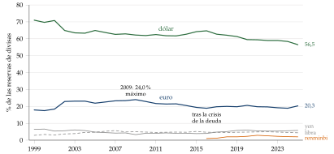
Fuente: elaboración propia a partir del FMI, COFER. A tipos de cambio corrientes (el BCE da el 20,2 % del euro en 2025 a tipos constantes); el renminbi, desde 2016.
La evolución: el euro ganó peso en sus 10 primeros años, hasta el 24 % de las reservas en 2009; la crisis de la deuda soberana (2010-2012) le hizo perder terreno, y desde 2015 se mantiene en torno al 20 %. El dólar baja poco a poco (del 71 % en 1999 al 57 % en 2025), pero lo que pierde no lo gana el euro, sino el oro y las monedas de otros países avanzados.
El euro como ancla: una treintena de países y territorios de fuera de la Unión fijan su moneda al euro o lo toman como referencia, sobre todo en el vecindario y en África (tabla 1). Es un instrumento de la acción exterior: da estabilidad a los vecinos, prepara a los candidatos para el euro y ata a la Unión con la zona del franco CFA. La zona del euro tiene 21 miembros desde que Bulgaria la adoptó el 1 de enero de 2026.
| Régimen | Estados de la UE | Fuera de la UE |
|---|---|---|
| Euroización (sin moneda propia) | — | Con acuerdo monetario: Andorra, Mónaco, San Marino y Vaticano; unilateral: Montenegro y Kosovo |
| Caja de conversión | — | Bosnia y Herzegovina |
| Tipo fijo con bandas (MTC II) | Dinamarca | — |
| Tipo fijo o estabilizado frente al euro | Rumanía (estabilizado) | Macedonia del Norte; francos CFA (14 países africanos) y CFP; Cabo Verde, Comoras, Santo Tomé y Príncipe |
| Flotación con el euro como referencia | Chequia, Hungría, Polonia | Serbia, Albania; cestas con el euro (Marruecos) |
| Flotación libre con objetivo de inflación | Suecia | — |
Fuente: elaboración propia a partir del anexo estadístico del BCE.
La ambición de 2025-2026: los aranceles de Estados Unidos de abril de 2025 llegaron con una caída del dólar y una subida de los tipos de sus bonos, algo poco habitual en una crisis, y abrieron un debate sobre su papel de refugio. Lagarde (2025) habló de un «momento del euro global» que el euro no ganará por defecto: tendrá que ganárselo con un mercado de capitales integrado, un activo seguro común, solidez institucional y capacidad de defensa. La Cumbre del Euro de marzo de 2026 lo hizo suyo, y el BCE abrió en febrero de 2026 a todos los bancos centrales su facilidad de préstamo en euros (EUREP). En una encuesta de abril de 2026, sin embargo, el 70 % de los bancos centrales veía la geopolítica como su mayor riesgo, pero la mayoría no había cambiado la composición de sus reservas [ver tema 3.B.43].
El tipo de cambio del euro frente al dólar. El euro nació en 1999 a 1,17 dólares, cayó a 0,83 en 2000 (burbuja tecnológica en Estados Unidos), subió hasta casi 1,60 en 2008 (déficit exterior estadounidense), osciló en torno a 1,35 en la Gran Recesión, bajó hacia 1,05 con la expansión cuantitativa del BCE (2015-2016) y volvió a la paridad en 2022, cuando la Reserva Federal subió antes los tipos y la guerra de Ucrania golpeó a Europa; en 2025 se apreció con fuerza. El euro flota libremente: un acuerdo cambiario formal con otras monedas lo tendría que decidir el Consejo por unanimidad (art. 219 TFUE).
Pero el peso de la Unión no está solo en sus cifras. Con estas palancas, ¿por qué conviene que actúe en común, y con qué reglas lo hace?
I.2. La justificación y el marco jurídico e institucional
I.2.1. ¿Por qué una acción exterior común?
La pregunta: ¿qué gana la Unión actuando fuera como un bloque y no como 27 Estados? La teoría del federalismo fiscal da el criterio: centralizar una política compensa cuando sus economías de escala y sus externalidades entre Estados pesan más que el coste de imponer a todos la misma política aunque sus preferencias difieran. Alesina, Angeloni y Etro (2005) lo aplican a las uniones de países, y la política exterior y comercial es su caso más claro [ver tema 4.B.14].
Los argumentos a favor:
la unión aduanera lo exige: con un mercado sin fronteras interiores, los aranceles de cada Estado se esquivarían entrando por el más barato (desviación del comercio), así que el arancel y la política comercial tienen que ser comunes [ver tema 3.B.10];
el tamaño da poder de negociación: un mercado de 450 millones de consumidores obtiene en un acuerdo concesiones que ningún Estado lograría solo, y puede responder a la coerción de otros;
el tamaño da poder normativo: las empresas de fuera adoptan las normas europeas en todo el mundo cuando les sale más caro tener 2 líneas de producción que cumplirlas fuera; es el efecto Bruselas de Bradford (2012), cuyo modelo está en el anexo A.1;
los bienes públicos: la estabilidad y la prosperidad del vecindario, el clima o la salud mundial benefician a todos los Estados, y cada uno, por su cuenta, aportaría menos de lo eficiente (el problema del polizón) [ver tema 3.A.23];
las economías de escala: una red de 145 delegaciones, un solo negociador comercial o un instrumento de ayuda común cuestan menos que 27, y evitan que los receptores de la ayuda tengan que tratar con muchos donantes pequeños (III.2.2).
El argumento en contra: los Estados tienen intereses y preferencias distintos (frente a Rusia, China, Israel o sus antiguas colonias), y una política única puede alejarse de lo que quiere cada uno. Por eso la Unión centraliza del todo el comercio, comparte la cooperación al desarrollo y deja la política exterior en manos de la unanimidad.
I.2.2. Las competencias y la base jurídica
Las competencias son de 3 tipos (anexo C):
exclusivas: la política comercial y la unión aduanera (art. 3 TFUE); la Unión habla sola y los Estados no pueden firmar acuerdos comerciales propios. También celebrar un acuerdo internacional cuando lo prevé un acto de la Unión o puede afectar a normas comunes (art. 3.2);
paralelas: en la cooperación al desarrollo y la ayuda humanitaria, la Unión tiene su propia política, «sin que el ejercicio de esta competencia pueda tener por efecto impedir a los Estados miembros ejercer la suya» (art. 4.4 TFUE); por eso conviven 28 políticas de desarrollo, que deben coordinarse (art. 210 TFUE);
intergubernamentales: la PESC, decidida por unanimidad, sin actos legislativos y casi sin control del Tribunal de Justicia.
Los principios y objetivos (arts. 21 y 22 TUE): la acción exterior se guía por los principios que inspiraron la creación de la Unión (democracia, Estado de Derecho, derechos humanos, igualdad, solidaridad, respeto del Derecho internacional) y persigue, entre otros objetivos:
apoyar el desarrollo sostenible de los países en desarrollo, con el objetivo fundamental de erradicar la pobreza;
fomentar la integración de todos los países en la economía mundial, también mediante la supresión progresiva de los obstáculos al comercio;
ayudar a las poblaciones afectadas por catástrofes y promover un sistema internacional basado en una cooperación multilateral sólida y en una buena gobernanza mundial.
El Consejo Europeo fija por unanimidad los intereses y objetivos estratégicos de la Unión (art. 22 TUE).
La quinta parte del TFUE (arts. 205 a 222) reúne toda la acción exterior que no es PESC (tabla 2).
Otras bases: la política de vecindad (art. 8 TUE), la adhesión (art. 49 TUE) y la PESC (arts. 23 a 46 TUE).
| Artículos | Materia | Qué dice |
|---|---|---|
| 205 | Disposiciones generales | La acción exterior sigue los principios y objetivos del art. 21 TUE |
| 206-207 | Política comercial común | Competencia exclusiva; aranceles, acuerdos comerciales, defensa comercial [ver tema 3.B.41] |
| 208-211 | Cooperación para el desarrollo | Objetivo principal: reducir y erradicar la pobreza; políticas de la Unión y de los Estados que se complementan |
| 212-213 | Cooperación económica, financiera y técnica con terceros países | Con los países que no son en desarrollo: base de la ayuda macrofinanciera; ayuda financiera urgente (art. 213) |
| 214 | Ayuda humanitaria | Asistencia a las víctimas de catástrofes y conflictos; Cuerpo Voluntario Europeo de Ayuda Humanitaria |
| 215 | Medidas restrictivas | Sanciones económicas, tras una decisión PESC por unanimidad |
| 216-219 | Acuerdos internacionales | Quién negocia y concluye; acuerdos de asociación (art. 217); acuerdos cambiarios (art. 219) |
| 220-221 | Organizaciones internacionales y delegaciones | Cooperación con las Naciones Unidas, la OCDE y otras; delegaciones de la Unión |
| 222 | Cláusula de solidaridad | Ayuda mutua ante un ataque terrorista o una catástrofe |
Fuente: elaboración propia a partir del TFUE.
I.2.3. Los actores y la toma de decisiones
Los actores (figura 2):
el Consejo Europeo fija las orientaciones (presidido desde diciembre de 2024 por António Costa);
el Consejo de Asuntos Exteriores decide los acuerdos, las sanciones y las posiciones; lo preside la AR, salvo cuando se reúne como Consejo de Comercio;
la Alta Representante y vicepresidenta de la Comisión, Kaja Kallas desde diciembre de 2024, con el Servicio Europeo de Acción Exterior (SEAE) y sus 145 delegaciones;
la Comisión, que propone, negocia los acuerdos comerciales y gestiona el dinero: la DG de Comercio y Seguridad Económica (DG TRADE), la de Asociaciones Internacionales (DG INTPA, desarrollo), la de Ampliación y Vecindad Oriental (DG ENEST), la de Oriente Próximo, Norte de África y Golfo (DG MENA); las 2 últimas nacieron en febrero de 2025 al partirse la antigua DG de Vecindad y Ampliación, la de Protección Civil y Ayuda Humanitaria (DG ECHO) y la de Asuntos Económicos (DG ECFIN, ayuda macrofinanciera);
el Parlamento Europeo, que aprueba los acuerdos (art. 218 TFUE), es colegislador de los instrumentos financieros y autoridad presupuestaria;
y los bancos públicos: el BEI Global y el BERD [ver tema 3.B.30].
La toma de decisiones depende de la materia:
en comercio y desarrollo, el método comunitario: la Comisión propone, el Parlamento y el Consejo deciden por el procedimiento legislativo ordinario y el Consejo vota por mayoría cualificada (arts. 207 y 209 TFUE);
en la PESC, el Consejo decide por unanimidad (art. 31 TUE), con la abstención constructiva como válvula; el Parlamento solo es consultado;
en los acuerdos internacionales (art. 218 TFUE), la Comisión (o la AR, si es PESC) recomienda, el Consejo autoriza la negociación y fija las directrices, la Comisión negocia, el Parlamento da su aprobación y el Consejo concluye.
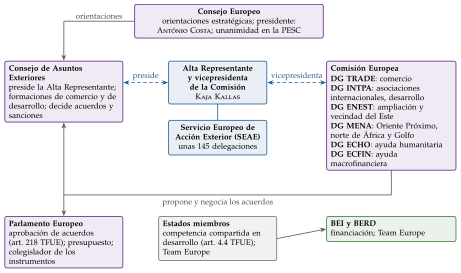
Fuente: elaboración propia a partir del TUE, el TFUE y el organigrama de la Comisión.
I.2.4. La evolución: del arancel común a la geoeconomía
La Comunidad comercial (1957-1992): el Tratado de Roma creó la unión aduanera, con un arancel exterior común completo en 1968 y la política comercial común, y asoció a los territorios de ultramar. La política exterior quedó fuera: desde 1970 hubo una Cooperación Política Europea entre gobiernos, que el Acta Única (1986) puso por escrito.
La Unión con 2 pilares exteriores (1992-2009): Maastricht creó la PESC como pilar intergubernamental y dio base a la cooperación al desarrollo; Ámsterdam (1997) creó el Alto Representante para la PESC (1999).
Lisboa (2009): la Unión tiene personalidad jurídica (art. 47 TUE) y firma acuerdos en su nombre; nacen la Alta Representante y vicepresidenta de la Comisión, el SEAE (2011) y el presidente estable del Consejo Europeo; la inversión extranjera directa pasa a la política comercial.
El giro geoeconómico (desde 2019): una «Comisión geopolítica», China como «rival sistémico» (2019), la autonomía estratégica abierta, Global Gateway (2021), la Brújula Estratégica (2022), las sanciones a Rusia y la estrategia de seguridad económica (2023): promover la competitividad, protegerse de los riesgos (control de inversiones y de exportaciones, instrumento anticoerción) y asociarse con quienes comparten esos intereses.
I.2.5. Los instrumentos
Los acuerdos internacionales son de 4 grandes tipos:
de asociación (art. 217 TFUE): diálogo político, cooperación y una zona de libre comercio (los de vecindad, América Latina, el Acuerdo de Samoa);
comerciales: zonas de libre comercio de nueva generación, con servicios, inversión y desarrollo sostenible [ver tema 3.B.41];
de asociación económica con los países de África, el Caribe y el Pacífico (ACP), compatibles con la OMC;
de colaboración y cooperación, sin preferencias comerciales.
Si tocan competencias de los Estados (la inversión de cartera, la solución de diferencias inversor-Estado), son acuerdos mixtos y los ratifican también los 27, como dejó claro el Dictamen 2/15 del Tribunal de Justicia (2017) sobre el acuerdo con Singapur.
Los instrumentos financieros, en la rúbrica 6 del marco financiero plurianual, «Vecindad y mundo» (113.700 millones de euros en 2021-2027, el 9 % del marco) [ver tema 3.B.37]:
el IVDCI-Europa Global (79.462 millones), que reúne desde 2021 los antiguos instrumentos geográficos y temáticos y el Fondo Europeo de Desarrollo;
el Instrumento de Ayuda Preadhesión, IPA III (14.162 millones);
la ayuda humanitaria (11.569 millones), el presupuesto de la PESC y los países y territorios de ultramar;
y, fuera de los techos, el Mecanismo para Ucrania (50.000 millones en 2024-2027).
La ayuda macrofinanciera (art. 212 TFUE): préstamos o donaciones a países vecinos con problemas de balanza de pagos, complementarios de un programa del FMI y condicionados a reformas.
Las medidas restrictivas (art. 215 TFUE): congelación de activos, prohibiciones de importar o exportar y de prestar servicios, tras una decisión PESC unánime (II.1.3).
I.3. Las organizaciones y foros internacionales
Una vez visto el marco, pasamos a las organizaciones en las que la Unión defiende sus intereses. Es el multilateralismo, el tercer nivel de su acción exterior.
I.3.1. El principio y la base jurídica
El principio: la Unión defiende un multilateralismo eficaz basado en reglas, con las Naciones Unidas en el centro (art. 21 TUE).
La base jurídica:
art. 220 TFUE: la Unión coopera con las Naciones Unidas y sus organismos especializados, el Consejo de Europa, la OSCE y la OCDE, y mantiene relaciones con otras organizaciones; la AR y la Comisión lo llevan a cabo;
art. 221 TFUE: las delegaciones de la Unión la representan ante terceros países y organizaciones;
art. 34 TUE: los Estados coordinan su acción en las organizaciones y conferencias, y los que se sientan en el Consejo de Seguridad defienden las posiciones de la Unión;
art. 138 TFUE, para el euro: el Consejo puede fijar posiciones comunes de la zona del euro en las instituciones financieras internacionales y medidas para una representación única; solo votan los Estados del euro. El BCE decide cómo se representa el Eurosistema (art. 6 de sus Estatutos).
El problema: casi todas las organizaciones solo admiten Estados. Por eso la presencia de la Unión depende de sus competencias, y quién habla por ella también (tabla 3):
donde la competencia es exclusiva, es miembro y habla la Comisión;
donde es de los Estados, es observador o no está, y los Estados coordinan su posición;
en lo monetario habla el BCE, y en los foros políticos, los presidentes del Consejo Europeo y de la Comisión.
I.3.2. La OMC y las instituciones de Bretton Woods
La Organización Mundial del Comercio (OMC, 166 miembros) [ver tema 3.B.33]:
la Unión es miembro de pleno derecho desde su creación (1995), junto con sus 27 Estados; como la política comercial es exclusiva, la Comisión negocia y habla por todos, y la Unión responde de las diferencias en las que la demandan o demanda;
es el segundo exportador e importador de bienes y el primero de servicios, y una de las economías que más se benefician de las reglas multilaterales;
ante el bloqueo del Órgano de Apelación desde 2019, impulsó el arreglo provisional de apelación por arbitraje (MPIA, 2020), y empuja los acuerdos entre grupos de países (plurilaterales), como el de comercio electrónico, frente a una organización que decide por consenso. En la 14.ª Conferencia Ministerial (Yaundé, marzo de 2026) no hubo acuerdo para prorrogar la moratoria de aranceles al comercio electrónico, vigente desde 1998.
El Fondo Monetario Internacional (FMI) [ver tema 3.B.22]:
la Unión no es miembro: solo lo son sus Estados, repartidos en varias sillas del Directorio Ejecutivo, a menudo compartidas con países de fuera;
el BCE es observador desde 1999 en el Directorio, para los asuntos de la política monetaria y cambiaria del euro, y en el Comité Monetario y Financiero Internacional;
las posiciones se coordinan en Bruselas (el Comité Económico y Financiero prepara las del ECOFIN y el Eurogrupo, las de la zona del euro) y en Washington (el EURIMF, que desde 1998 reúne a los directores ejecutivos europeos, y la delegación de la Unión);
los Estados de la Unión suman en torno a una cuarta parte de los votos, más que Estados Unidos (16 %): juntos podrían vetar las decisiones que exigen el 85 %, pero no tienen una silla única;
el euro forma parte de la cesta de los derechos especiales de giro desde 1999, con el segundo mayor peso tras el dólar.
El Grupo Banco Mundial [ver tema 3.B.30]:
la Unión tampoco es miembro: se relaciona con él como donante y como socio en los países receptores;
la Unión y sus Estados son de los mayores contribuyentes de la Asociación Internacional de Fomento (AIF), el fondo para los países más pobres, y la Comisión es uno de los grandes donantes de los fondos fiduciarios del Banco; ambos se coordinan en muchos países receptores.
I.3.3. Los foros de coordinación: OCDE, G-7 y G-20
La OCDE (38 miembros): la Comisión participa sin voto en todos sus trabajos desde su creación (Protocolo adicional n.º 1 del Convenio de 1960), y en el CAD es miembro de pleno derecho. Son miembros 22 Estados de la Unión (no lo son Bulgaria, Croacia, Chipre, Malta ni Rumanía, y los 3 primeros negocian su adhesión). La OCDE fija estándares que la Unión suele trasladar a su derecho, como la imposición mínima del 15 % a las multinacionales [ver tema 3.B.19].
El G-7: la Unión participa desde la cumbre de Londres de 1977 como «miembro no enumerado», representada por los presidentes de la Comisión y del Consejo Europeo; Alemania, Francia e Italia son miembros. Coordina las sanciones a Rusia, incluido el tope al petróleo (II.1.3).
El G-20: la Unión es miembro desde su creación (1999), representada en las cumbres por los presidentes del Consejo Europeo y de la Comisión, y en la vía financiera por la Comisión, el BCE y la presidencia del Consejo. Los 3 Estados europeos miembros no defienden una posición nacional donde la competencia es de la Unión.
I.3.4. Las Naciones Unidas y sus agencias
La Asamblea General: la Unión es observador desde 1974 y, desde la Resolución 65/276 (2011), observador reforzado: puede intervenir, presentar propuestas y enmiendas, pero no votar ni presentar candidatos. Es parte de más de 50 convenios de las Naciones Unidas, como el Acuerdo de París.
Las agencias: es miembro de la FAO desde 1991 (la primera organización regional admitida), donde vota en lo que es de su competencia, y del Codex Alimentarius; en la mayoría de las demás (OMS, OIT, UNCTAD) es observador.
La financiación: los Estados de la Unión pagan en torno a una quinta parte del presupuesto ordinario de las Naciones Unidas y una parte mayor de las contribuciones voluntarias a sus fondos y programas, y la Comisión es uno de sus grandes donantes.
I.3.5. Los bancos y los foros financieros
El BERD (1991): la Unión y el BEI son accionistas fundadores, con un 3 % del capital cada uno, y junto con los Estados de la Unión tienen la mayoría; financia la transición en Europa central y oriental, Asia central, el Mediterráneo y Ucrania [ver tema 3.B.30].
El BEI fuera de la Unión: desde 2022 su rama BEI Global concentra la actividad exterior, con la garantía del presupuesto de la Unión (III.2.4).
El Consejo de Estabilidad Financiera (FSB): son miembros la Comisión y el BCE, junto con varios Estados.
El Banco de Pagos Internacionales (BPI), nacido en 1930 como foro europeo (fue el agente de la Unión Europea de Pagos de 1950): el BCE es uno de sus bancos centrales miembros, y participa en el Comité de Supervisión Bancaria de Basilea.
| Organización | Estatuto de la UE | Quién la representa | Rasgo principal |
|---|---|---|---|
| OMC | Miembro (1995) | La Comisión | Los 27 son también miembros; competencia exclusiva |
| FMI | No es miembro | El BCE, observador; los Estados | Posiciones del euro (art. 138 TFUE); EURIMF |
| Banco Mundial | No es miembro | Los Estados; la Comisión, como donante | Gran donante de la AIF y de fondos fiduciarios |
| OCDE | Participante sin voto | La Comisión | Miembro del CAD; 22 Estados miembros |
| G-7 | Miembro no enumerado (1977) | Presidentes del Consejo Europeo y de la Comisión | Alemania, Francia e Italia, miembros |
| G-20 | Miembro (1999) | Presidentes; Comisión, BCE y presidencia del Consejo | España, invitado permanente |
| Naciones Unidas | Observador reforzado (2011) | La delegación de la Unión | Parte en más de 50 convenios |
| FAO | Miembro (1991) | La Comisión | Vota en lo que es de su competencia |
| BERD | Accionista (1991) | La Comisión y el BEI | Un 3 % del capital cada uno |
| FSB y BPI | Miembros | La Comisión y el BCE; el BCE | Estabilidad financiera y bancos centrales |
Fuente: elaboración propia a partir del TFUE, del SEAE y de las fichas del Parlamento Europeo.
El resultado: la Unión y sus Estados son los mayores contribuyentes de casi todas estas organizaciones, pero hablan con varias voces; donde tiene competencia (la OMC), pesa como un gran Estado, y donde no la tiene (el FMI), pesa menos de lo que suman sus Estados.
Recapitulación: la Unión tiene un peso económico enorme, con el euro como segunda moneda del mundo, buenas razones para actuar en común, un marco jurídico propio, muchos actores y un lugar desigual en las organizaciones internacionales; ejerce su poder sobre todo con el mercado, las normas, el dinero y la moneda. Veamos ahora cómo lo usa con cada grupo de países, empezando por los más cercanos.
II. Visión regional: vecinos, socios y rivales
Una vez visto el marco común, pasamos a analizar cómo trata la Unión a cada grupo de países.
Conclusión anticipada: la Unión organiza sus relaciones en círculos concéntricos (figura 3). Cuanto más cerca, más integración ofrece y más condiciones pone: a los candidatos, la adhesión; a los vecinos, su mercado y su dinero a cambio de reformas; a los grandes socios, acuerdos y, si hace falta, sanciones. El refrán se cumple: con el vecino cercano la relación es más estrecha y más exigente.
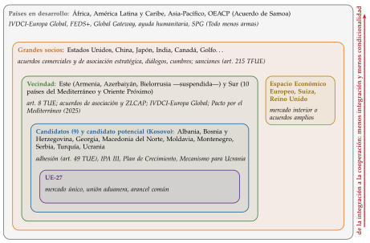
Fuente: elaboración propia a partir de la Comisión Europea y el SEAE. Situación a 14/11/2026.
II.1. La economía como instrumento geoestratégico
II.1.1. La política de ampliación
La base: cualquier Estado europeo que respete los valores del art. 2 TUE puede pedir la adhesión (art. 49 TUE). El Consejo decide por unanimidad, tras consultar a la Comisión y con la aprobación del Parlamento, y el tratado de adhesión lo ratifican todos los Estados (figura 4).
Los criterios de Copenhague (Consejo Europeo de junio de 1993), completados en Madrid (1995):
políticos: instituciones estables que garanticen la democracia, el Estado de Derecho, los derechos humanos y el respeto de las minorías;
económicos: una economía de mercado que funcione y capacidad para hacer frente a la presión competitiva dentro de la Unión;
el acervo: capacidad para asumir las obligaciones de la adhesión, con una administración capaz de aplicarlo (Madrid).
A ellos se añade la capacidad de integración de la propia Unión.
La metodología revisada (febrero de 2020): los 33 capítulos que se negocian (35 en total) se agrupan en 6 bloques (clusters): fundamentos (Estado de Derecho, economía, instituciones), mercado interior, competitividad, agenda verde, recursos y agricultura, y relaciones exteriores. Los fundamentos se abren los primeros y se cierran los últimos, y el proceso es reversible: los retrocesos pueden congelar o reabrir capítulos.
El dinero:
el IPA III (Reglamento 2021/1529), 14.162 millones de euros en 2021-2027, ligado a los avances en las reformas;
el Plan de Crecimiento para los Balcanes Occidentales, con su Mecanismo de Reforma y Crecimiento (Reglamento 2024/1449): 6.000 millones (2.000 en donaciones y 4.000 en préstamos) que se pagan cuando el país cumple las reformas de su agenda y que le abren por adelantado partes del mercado único; Moldavia tiene uno propio de 1.900 millones;
el Mecanismo para Ucrania (Reglamento 2024/792), 50.000 millones para 2024-2027, del que se habían pagado más de 32.000 millones en octubre de 2026, y el Préstamo de Apoyo a Ucrania, 90.000 millones para 2026-2027 (60.000 para defensa y 30.000 de apoyo presupuestario), financiado con deuda de la Unión y acordado por cooperación reforzada en abril de 2026.
La situación en noviembre de 2026 (paquete de ampliación del 4 de noviembre):
9 candidatos (Albania, Bosnia y Herzegovina, Georgia, Macedonia del Norte, Moldavia, Montenegro, Serbia, Turquía y Ucrania) y un candidato potencial (Kosovo);
Montenegro ha cerrado provisionalmente 21 de 33 capítulos y podría cerrar el resto a finales de 2026; ya se redacta su tratado de adhesión, con un paquete financiero de unos 3.200 millones;
Albania tiene abiertos los 6 bloques y aspira a terminar en 2027;
Ucrania y Moldavia abrieron en junio de 2026 el bloque de fundamentos, cuando Hungría levantó su veto, y han abierto 4 bloques cada una; sus objetivos de cierre son finales y principios de 2028;
la Comisión propone hojas de ruta para estos 4 países y un marco de integración gradual en energía, transporte, digitalización y defensa;
Serbia no avanza, Bosnia y Herzegovina se aleja, Georgia es candidata «solo de nombre» y con Turquía la negociación está parada desde 2018.
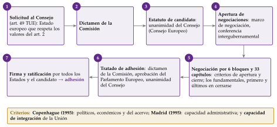
Fuente: elaboración propia a partir del art. 49 TUE y de la Comisión Europea.
Por qué funciona: la clave es la condicionalidad. La Unión ofrece una recompensa muy grande (la adhesión) a cambio de reformas, y solo la da cuando están hechas. En el modelo de los incentivos externos de Schimmelfennig y Sedelmeier (2004), un gobierno reforma si el valor esperado y descontado de la adhesión, más las recompensas intermedias, cubre el coste interno de las reformas:
funciona si la recompensa es grande, creíble y cercana: así fue en 2004, y no en los Balcanes tras Salónica (2003), con una promesa lejana y vetos bilaterales;
si la adhesión se aleja o la promesa pierde credibilidad, llega la fatiga de la ampliación; por eso la metodología de 2020 y el Plan de Crecimiento pagan por reformas antes de entrar y abren el mercado único por partes;
una vez dentro, la palanca se pierde: de ahí el mecanismo de condicionalidad del Estado de Derecho del presupuesto (2020) y las salvaguardias que se proponen para los futuros tratados de adhesión.
El modelo, con su gráfico y la evidencia, está en el anexo A.2.
Fuera del círculo de los candidatos, la Unión no puede ofrecer la adhesión: ¿qué condicionalidad le queda con sus vecinos?
II.1.2. La política europea de vecindad
Qué es: desde 2004, la política con los vecinos que no van a entrar a corto plazo. Su base es el art. 8 TUE: un espacio de prosperidad y buena vecindad con acuerdos específicos.
Su lógica: «todo menos las instituciones»: acceso al mercado y a los programas de la Unión, y dinero, a cambio de reformas (más por más).
2 dimensiones:
la Asociación Oriental (2009): Armenia, Azerbaiyán, Bielorrusia (suspendida desde 2021), Georgia, Moldavia y Ucrania. Con las 3 últimas hay acuerdos de asociación con zonas de libre comercio de alcance amplio y profundo (ZLCAP, 2014), y hoy son candidatas;
la Vecindad Meridional: 10 países del Mediterráneo y Oriente Próximo (Argelia, Egipto, Israel, Jordania, Líbano, Libia, Marruecos, Palestina, Siria y Túnez), con acuerdos de asociación euromediterráneos. Su foro multilateral es la Unión por el Mediterráneo (2008), con 43 miembros y secretaría en Barcelona, heredera del Proceso de Barcelona (1995).
La renovación:
en febrero de 2025 la Comisión partió la antigua DG de Vecindad y Ampliación en 2: la DG ENEST, para la ampliación y el Este, y la DG MENA, para el Mediterráneo, Oriente Próximo y el Golfo, con una comisaria propia para el Mediterráneo;
el Pacto por el Mediterráneo (octubre de 2025), con 3 pilares: las personas (educación, movilidad, cultura), unas economías más sostenibles e integradas (energía limpia, conectividad, inversión) y la seguridad, la preparación y la gestión de la migración;
las asociaciones estratégicas y globales bilaterales, que juntan comercio, energía, inversión y migración: Túnez (2023), Mauritania (2024, 210 millones), Egipto (2024, 7.400 millones para 2024-2027, sobre todo préstamos macrofinancieros) y Jordania (2025, 3.000 millones).
Su valoración: la condicionalidad es débil (la recompensa es menor que la adhesión y la Unión necesita a sus vecinos para la energía y la migración), y la política se ha ido volviendo más transaccional. España, por su posición, empuja la dimensión mediterránea.
II.1.3. La PESC y las sanciones
La PESC no es una política económica, pero tiene 2 instrumentos económicos de gran alcance:
las medidas restrictivas: una decisión PESC por unanimidad (art. 29 TUE) y un reglamento del Consejo por mayoría cualificada (art. 215 TFUE), que aplican las empresas y los Estados; hay más de 40 regímenes en vigor;
el Fondo Europeo de Apoyo a la Paz (fuera del presupuesto), que ha financiado material militar para Ucrania.
Las sanciones a Rusia: desde la invasión de Ucrania (24 de febrero de 2022), 21 paquetes, el último el 23 de julio de 2026:
financieras: inmovilización de unos 210.000 millones de euros del banco central ruso, casi todos en Euroclear, por tiempo indefinido desde diciembre de 2025; exclusión de bancos de SWIFT;
comerciales: prohibición de exportar tecnología y bienes de doble uso y de importar acero, carbón, crudo por mar (desde diciembre de 2022) y productos petrolíferos; un mecanismo contra la elusión por terceros países;
energéticas: el Reglamento 2026/261 prohíbe el gas ruso: el gas natural licuado (GNL) con contratos a largo plazo desde el 1 de enero de 2027 y el de gasoducto desde el 30 de septiembre de 2027;
contra la flota en la sombra: más de 550 buques sancionados.
El tope al precio del petróleo, la pieza más original: un embargo total del crudo ruso habría disparado el precio mundial y la inflación en Europa. El G-7 y la Unión acordaron en 2022 un tope al precio (price cap): las empresas occidentales, que dominan el transporte marítimo, el seguro y la financiación del crudo, solo pueden dar esos servicios si el crudo ruso se vende por debajo del tope.
La idea: quitar a Rusia su renta sin quitar su petróleo del mercado; mientras el tope quede por encima del coste de producir, a Rusia le sigue compensando vender y el precio mundial no sube.
Su punto débil: la flota en la sombra, que transporta el crudo sin servicios occidentales; por eso cada paquete sanciona más buques.
El resultado: el petróleo ruso siguió llegando al mercado sin disparar el precio mundial, y los ingresos rusos del petróleo y el gas cayeron, aunque menos de lo esperado.
El tope al petróleo ruso, en un gráfico (para consultar).
Cómo se reparte la renta: Rusia produce a un coste \(c\) y vende su capacidad \(\bar Q\) al precio mundial \(P^*\). Con un tope \(\bar P\) entre \(c\) y \(P^*\), la parte \(\theta\) de su crudo que usa servicios occidentales se vende a \(\bar P\) y el resto viaja en la flota en la sombra, que cuesta \(k\) más por barril. Su renta pasa de \((P^*-c)\,\bar Q\) a \(R=\big[\theta\,\bar P+(1-\theta)(P^*-k)-c\big]\,\bar Q\), y la diferencia va a los compradores (la India, China y Turquía, que compran con descuento) o se pierde en la flota en la sombra (gráfico 3). Si el tope quedara por debajo de \(c\), Rusia dejaría de exportar y el precio mundial subiría.
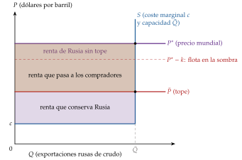
Fuente: elaboración propia a partir de Johnson, Rachel y Wolfram (2023).
El tope dinámico: el 18.º paquete (julio de 2025) bajó el tope de 60 a 47,6 dólares por barril desde el 3 de septiembre de 2025, y lo ligó al mercado: se fija un 15 % por debajo del precio medio del crudo Urales y se revisa cada 6 meses; desde febrero de 2026 es de 44,1 dólares, y el 21.º paquete lo congeló en ese nivel hasta julio de 2027.
La eficacia de las sanciones en general: los estudios clásicos encuentran que las sanciones logran su objetivo político en torno a un tercio de los casos, más cuando el objetivo es modesto, el sancionado es pequeño y depende del que sanciona, y menos con autocracias grandes.
El descuento: el crudo Urales llegó a venderse en marzo de 2023 unos 32 dólares por barril más barato que el Brent (frente a la paridad de enero de 2022). Kilian, Rapson y Schipper (2025) atribuyen cerca de la mitad a los mayores costes de transporte y el resto, sobre todo, al poder de negociación de la India; el tope en sí habría pesado poco en el precio de exportación, pero obligó a Rusia a pagar una flota en la sombra.
La renta: los ingresos del petróleo y el gas del presupuesto federal ruso cayeron de 11,6 billones de rublos en 2022 a 8,8 en 2023, se recuperaron en 2024 y volvieron a caer a 8,5 en 2025; su peso en los ingresos federales bajó del 35,8 % en 2021 al 22,7 % en 2025.
La valoración: el análisis supone que la oferta rusa no responde y que los compradores no se coordinan, e ignora el coste para Europa del fin del gas ruso, que se pagó con la crisis energética de 2022. Las sanciones, en conjunto, han debilitado la economía rusa sin detener la guerra: cumplen una función de contención y de señal más que de coerción.
II.2. El movimiento de bienes y factores: los grandes socios
Una vez vistos los círculos más cercanos, pasamos a los grandes socios. Primero, con qué instrumentos regula la Unión la entrada y salida de cada factor; después, la relación con cada socio, ordenada de la misma forma: su peso, el marco que la regula y la agenda abierta.
II.2.1. Los instrumentos, factor a factor
Bienes: la política comercial común (art. 207 TFUE): el arancel exterior común, la mayor red de acuerdos comerciales del mundo, el Sistema de Preferencias Generalizadas y la defensa comercial [ver tema 3.B.41].
Servicios: los acuerdos de nueva generación los incluyen, y la Unión es el primer exportador mundial; la mayoría de los obstáculos son normas internas, y por eso los acuerdos sobre reconocimiento mutuo y datos pesan tanto como los aranceles.
Capitales: la libre circulación vale también con terceros países (art. 63 TFUE), con 2 salvedades: la inversión extranjera directa es competencia exclusiva desde Lisboa, y desde 2020 se puede examinar por motivos de seguridad (Reglamento 2019/452); el acuerdo de inversión con China (2020) sigue congelado.
Personas: la política común de inmigración y asilo (arts. 77 a 80 TFUE), con el Pacto sobre Migración y Asilo (2024), que se aplica desde junio de 2026, las asociaciones con los países de origen y tránsito y la política común de visados.
II.2.2. Los socios avanzados
Estados Unidos:
su peso: el primer socio en bienes y servicios y el mayor inversor; en 2025 la Unión le vendió bienes por 555.000 millones de euros y le compró por 358.000 (gráfico 1);
el marco: sin acuerdo de libre comercio (el TTIP se abandonó en 2016-2019), con el Consejo de Comercio y Tecnología (2021) y, desde 2025, un acuerdo político;
la agenda: en 2025 la relación giró: tras la amenaza de aranceles del 30 %, el acuerdo político de Turnberry (julio) y la declaración conjunta del 21 de agosto fijaron un arancel máximo del 15 % para la mayoría de los bienes europeos, a cambio de que la Unión suprimiera sus aranceles industriales; en febrero de 2026 el Tribunal Supremo estadounidense anuló los aranceles basados en la ley de emergencias económicas, y la Unión aprobó en junio el reglamento que aplica su parte del acuerdo, que vence en marzo de 2028.
El Reino Unido:
su peso: el tercer socio en bienes (345.000 millones de exportaciones en 2025) y el segundo en servicios;
el marco: el Acuerdo de Comercio y Cooperación (2021), una zona de libre comercio sin aranceles ni cuotas, pero con controles en frontera;
la agenda: la primera cumbre (19 de mayo de 2025) acordó una asociación de seguridad y defensa y negociar un acuerdo sanitario y fitosanitario, la vinculación de los mercados de emisiones y la movilidad de los jóvenes, que se quieren cerrar en la segunda cumbre, el 20 de noviembre de 2026.
La AELC: con Islandia, Liechtenstein y Noruega, el Espacio Económico Europeo (1994), que extiende el mercado interior; con Suiza, el cuarto socio en bienes, un paquete de acuerdos bilaterales renovado en 2025 [ver tema 3.B.35].
Japón, Corea y Canadá: acuerdos de nueva generación (Corea, 2011; Canadá, aplicado provisionalmente desde 2017; Japón, 2019) y asociaciones de seguridad y defensa con Japón (2024) y Canadá (2025).
II.2.3. Los rivales sistémicos: China y Rusia
China, «socio, competidor económico y rival sistémico» desde 2019:
su peso: el primer proveedor de la Unión (574.000 millones en 2025) y el tercer cliente, con un déficit bilateral récord de unos 375.000 millones;
el marco: sin acuerdo comercial; la Unión aplica la reducción de riesgos (de-risking): diversificar en las materias primas críticas, defensa comercial (derechos a los coches eléctricos, 2024) y control de inversiones;
la agenda: la cumbre de Pekín (julio de 2025), en el 50.º aniversario de las relaciones, solo acordó un mecanismo para las licencias de exportación de tierras raras.
Rusia: de primer proveedor de energía a objeto de sanciones; el comercio bilateral se ha hundido desde 2022 y la Unión prohíbe ya el gas ruso (II.1.3).
II.2.4. Las regiones emergentes y en desarrollo
América Latina y el Caribe:
una Nueva Agenda (2023) y la cumbre UE-CELAC de Santa Marta (noviembre de 2025), con una agenda de inversiones de Global Gateway de 45.000 millones;
acuerdos con México, Chile y Centroamérica, y con Mercosur: firmado en enero de 2026 y aplicado provisionalmente en su parte comercial desde mayo, a la espera del dictamen del Tribunal de Justicia [ver tema 3.B.41].
África: la cumbre Unión Africana-Unión Europea de Luanda (noviembre de 2025), en el 25.º aniversario de la asociación, con un paquete de inversiones de Global Gateway de 150.000 millones; y el Acuerdo de Samoa (III.2.3).
Asia y el Indo-Pacífico: la estrategia para el Indo-Pacífico (2021); acuerdos con Singapur y Vietnam; las negociaciones con la India, concluidas en enero de 2026, y otras en curso con países del sudeste asiático.
El Golfo: primera cumbre con el Consejo de Cooperación del Golfo (octubre de 2024) y la relanzada negociación de un acuerdo comercial; la segunda, prevista en Riad para octubre de 2026, se aplazó.
II.2.5. Los retos de la acción exterior
Un mundo de bloques: con la rivalidad entre Estados Unidos y China y los aranceles de 2025, la Unión tiene que defender un comercio basado en reglas mientras se protege con los instrumentos de la seguridad económica, sin caer en el proteccionismo.
Una sola voz: la unanimidad de la PESC permite a un Estado bloquear sanciones o declaraciones; se discute usar la mayoría cualificada que ya permiten los Tratados (art. 31.3 TUE).
La ampliación: recibir a Ucrania, Moldavia y los Balcanes exige reformar antes las instituciones y el presupuesto de la Unión, y reconstruir Ucrania.
El dinero: la rúbrica exterior del marco 2028-2034 tendrá que pagar a la vez la ampliación, la vecindad, el desarrollo y Ucrania (III.2.5).
La moneda: convertir el «momento del euro global» en más uso internacional exige un activo seguro común y unos mercados de capitales integrados (I.1.3).
Recapitulación: la Unión da a cada círculo lo que puede: adhesión a los candidatos, mercado y dinero a los vecinos, acuerdos o sanciones a los grandes socios y a sus rivales. El último círculo, el de los países en desarrollo, tiene su propia política.
III. La política de cooperación al desarrollo
Una vez vistos los círculos más cercanos, pasamos al más amplio: los países en desarrollo.
Conclusión anticipada: la Unión y sus Estados son el primer donante del mundo, pero la ayuda europea está cambiando de naturaleza: de las donaciones a las asociaciones y la inversión (Global Gateway), de la generosidad al interés propio declarado, y de crecer a recortarse en varios Estados.
III.1. Consideraciones generales
III.1.1. Conceptos básicos
La cooperación al desarrollo es el conjunto de acciones públicas y privadas a favor del desarrollo de otros países; incluye las preferencias comerciales, que no transfieren recursos.
La ayuda oficial al desarrollo (AOD) es la que cumple los 4 requisitos del CAD de la OCDE:
va a los países y territorios de la lista de receptores del CAD o a instituciones multilaterales de desarrollo;
la dan organismos oficiales: el Estado, sus administraciones territoriales o sus agencias;
su objetivo principal es el desarrollo económico y el bienestar de los países en desarrollo (no cuentan, por ejemplo, la ayuda militar ni los créditos a la exportación);
es concesional: las donaciones cuentan enteras y, desde los datos de 2018, los préstamos solo por su donación equivalente, y solo si su elemento de donación llega al 45 % para los países menos adelantados y de renta baja (con un tipo de descuento del 9 %), al 15 % para los de renta media-baja (7 %) y al 10 % para los de renta media-alta (6 %) y para las instituciones multilaterales [ver tema 3.B.29].
Sus tipos, según lo que se da:
cooperación financiera, reembolsable (préstamos blandos) o no (donaciones), incluido el apoyo presupuestario, que va al presupuesto del receptor;
asistencia técnica: conocimientos, formación, hermanamientos entre administraciones;
cooperación económica: proyectos de inversión y ayuda al comercio (aid for trade);
ayuda humanitaria y de emergencia, para salvar vidas tras una catástrofe o un conflicto.
El objetivo del 0,7 % de la RNB lo adoptó la Asamblea General de las Naciones Unidas en 1970; la Unión se ha comprometido a alcanzarlo colectivamente en 2030, con un 0,15-0,20 % para los países menos adelantados.
III.1.2. La ayuda en el mundo: donantes y agenda
Los donantes: los 33 miembros del CAD dieron en 2025 unos 174.300 millones de dólares de AOD, el 0,26 % de su RNB, tras una caída del 23,1 % en términos reales, la mayor registrada, por el recorte de Estados Unidos y de varios Estados europeos. Fuera del CAD crecen China, los países del Golfo y Turquía, que no siguen sus reglas.
Los receptores: el África subsahariana recibe la mayor parte, seguida de Asia; por sectores, sobre todo infraestructura social (salud, educación, gobierno), ayuda humanitaria y, cada vez más, gasto en refugiados dentro de los propios países donantes.
La agenda internacional:
los objetivos: de los Objetivos de Desarrollo del Milenio (2000-2015) a la Agenda 2030 y sus 17 Objetivos de Desarrollo Sostenible (anexo B);
la financiación: 4 conferencias de las Naciones Unidas, Monterrey (2002), Doha (2008), Addis Abeba (2015) y Sevilla (2025). El Compromiso de Sevilla, aprobado sin Estados Unidos, pone en primer lugar los recursos propios de los países y pide triplicar la capacidad de préstamo de los bancos multilaterales y reformar la reestructuración de la deuda;
la eficacia: los principios de París (2005): apropiación, alineamiento, armonización, gestión por resultados y mutua responsabilidad, ampliados en Accra (2008) y Busan (2011).
III.2. La Unión Europea y la ayuda al desarrollo
La política de la Unión se cuenta con la fórmula de sus políticas: relevancia, justificación y marco, evolución, articulación y retos.
III.2.1. Relevancia: el primer donante del mundo
El Equipo Europa: en 2025 los 27 Estados dieron unos 87.000 millones de dólares de AOD, el 0,41 % de su RNB y la mitad de toda la AOD de los países del CAD; con la parte de las instituciones que no se imputa a los Estados, la cifra es algo mayor.
Las instituciones de la Unión dieron 23.100 millones de euros (26.100 millones de dólares), un 13,8 % menos que en 2024 en términos reales; con Alemania, Estados Unidos y el Reino Unido, están entre los mayores donantes del mundo.
Por Estados (gráfico 4): solo Luxemburgo (0,99 %), Suecia (0,85 %) y Dinamarca (0,72 %) superan el 0,7 %; Alemania, con el 0,56 %, fue en 2025 el mayor donante del mundo en volumen, por primera vez por delante de Estados Unidos. Los Estados del Este no llegan al 0,2 %.
Los recortes: la AOD de los miembros europeos del CAD bajó del 0,47 al 0,42 % de su RNB en 2025, con Alemania (del 0,68 al 0,56 %), Bélgica, Francia, Irlanda y los Países Bajos a la cabeza; Bélgica, Finlandia, Francia, Alemania, los Países Bajos y Suecia han anunciado más recortes para 2025-2027, para pagar más defensa. España sube (del 0,25 al 0,27 %). El objetivo colectivo del 0,7 % en 2030 se aleja.
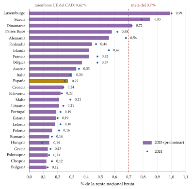
Fuente: elaboración propia a partir de la OCDE. Donación equivalente; 2025, datos preliminares.
III.2.2. Justificación y marco jurídico
La aproximación de teoría económica responde a 2 preguntas:
¿Por qué es tan difícil salir de la pobreza? Por la falta de capital físico y humano y de innovación (Solow; Mankiw, Romer y Weil) [ver tema 3.A.43] [ver tema 3.A.44]; por las trampas de pobreza, que exigen un empujón coordinado [ver tema 3.B.28]; y por las instituciones extractivas, que impiden aprovechar los recursos, como sostienen Daron Acemoglu, Simon Johnson y James A. Robinson1 [ver tema 3.B.28].
¿Por qué una política de la Unión?
equidad: la diferencia de renta entre los países más ricos y los más pobres es éticamente inaceptable, y los Tratados ponen la erradicación de la pobreza como objetivo;
eficiencia: la ayuda es un juego de suma positiva; abre mercados y provee bienes públicos mundiales (salud, clima, estabilidad), y la Unión puede hacerlo a una escala y con una coordinación que no tienen los Estados por separado;
geopolítica: da influencia, sobre todo cuando otros donantes se retiran y China ofrece su propia financiación;
historia: los lazos con las antiguas colonias de los Estados fundadores, que explican el origen de la política (III.2.3).
escala y coordinación: si cada donante reparte mirando solo su ayuda, el receptor soporta los costes de tratar con muchos donantes pequeños (fragmentación); coordinar a la Comisión y a los 27 en un solo programa por país ahorra costes y reduce más la pobreza.
¿A quién dársela? Si la ayuda rinde más donde hay más pobres y mejores políticas (Burnside y Dollar, 2000), un donante que quiera reducir la pobreza al máximo debe repartirla hasta igualar en todos los países la pobreza que reduce el último euro, y no según los lazos históricos o políticos: es la selectividad de Collier y Dollar (2002), que estimaron que así la ayuda sacaría de la pobreza a 80 millones de personas al año en lugar de 30. El modelo, su evidencia y sus críticas están en el anexo A.3.
La delimitación de competencias: la competencia es paralela (art. 4.4 TFUE): la Unión tiene su política y los Estados la suya, que se complementan y refuerzan mutuamente (art. 208 TFUE) (anexo C).
El marco jurídico:
el objetivo: la acción exterior apoya el desarrollo sostenible de los países en desarrollo con el objetivo fundamental de erradicar la pobreza (art. 21 TUE); la política de cooperación tiene como objetivo principal su reducción y, a largo plazo, su erradicación (art. 208 TFUE);
la coherencia: la Unión debe tener en cuenta ese objetivo en todas sus políticas que afecten a los países en desarrollo; es la coherencia de las políticas para el desarrollo (la PAC o la política pesquera no deberían dañar a los países pobres);
los compromisos internacionales: la Unión y los Estados respetan los que han asumido en las Naciones Unidas y otras organizaciones (art. 208.2);
el Consenso Europeo sobre Desarrollo (2017), firmado por las 3 instituciones y los Estados, adapta la política a la Agenda 2030 en torno a 5 ejes: personas, planeta, prosperidad, paz y asociaciones;
la ayuda humanitaria tiene su artículo propio (art. 214 TFUE) y sus principios: humanidad, neutralidad, imparcialidad e independencia.
La toma de decisiones:
el Parlamento y el Consejo adoptan los instrumentos por el procedimiento legislativo ordinario, por mayoría cualificada (art. 209 TFUE), y el Consejo celebra los acuerdos con los países en desarrollo (art. 218);
la Comisión programa y ejecuta la ayuda, con la DG INTPA y la DG ECHO, y el SEAE participa en la programación por países;
la Unión y los Estados coordinan sus programas y pueden actuar en común (art. 210), como hacen hoy las iniciativas Equipo Europa.
III.2.3. Evolución: de Yaundé a Samoa
La asociación con las excolonias (figura 5):
el Tratado de Roma (1957) asoció a los países y territorios de ultramar, y en 1959 nació el Fondo Europeo de Desarrollo (FED), fuera del presupuesto;
los Convenios de Yaundé (1963 y 1969) con 18 Estados africanos independizados;
los Convenios de Lomé (1975-2000) con los países de África, el Caribe y el Pacífico (ACP): preferencias comerciales no recíprocas, el STABEX (estabilización de los ingresos de exportación) y el FED.
Una política propia:
Maastricht (1992) le dio base jurídica; en 1971 llegó el Sistema de Preferencias Generalizadas para todos los países en desarrollo, y en 2001 la iniciativa Todo menos armas para los menos adelantados [ver tema 3.B.41];
el Acuerdo de Cotonú (2000-2023) sustituyó las preferencias no recíprocas, incompatibles con la OMC, por acuerdos de asociación económica recíprocos y asimétricos, y añadió el diálogo político.
El Acuerdo de Samoa entre la Unión y la Organización de Estados de África, el Caribe y el Pacífico (OEACP, 79 miembros): firmado el 15 de noviembre de 2023 en Apia y aplicado provisionalmente desde el 1 de enero de 2024. Tiene una base común con 6 prioridades (derechos humanos y gobernanza, paz y seguridad, desarrollo humano, crecimiento sostenible, clima y migración) y 3 protocolos regionales (África, Caribe y Pacífico). En noviembre de 2026 todavía no ha entrado en vigor: necesita la ratificación de todos los Estados de la Unión y de 2 tercios de los de la OEACP.
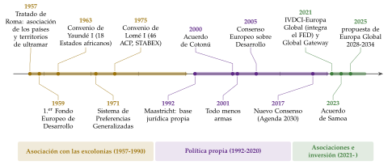
Fuente: elaboración propia a partir de la Comisión Europea y del Parlamento Europeo.
III.2.4. Articulación: los instrumentos
El IVDCI-Europa Global (Reglamento 2021/947) reúne desde 2021 casi toda la acción exterior, incluido el antiguo FED: 79.462 millones de euros en 2021-2027:
programas geográficos, 60.388 millones: al menos 29.181 para el África subsahariana y 19.323 para la vecindad, 8.489 para Asia y el Pacífico y 3.395 para América y el Caribe (gráfico 5);
programas temáticos, 6.358 millones (derechos humanos y democracia, sociedad civil, paz y estabilidad, retos mundiales); respuesta rápida a crisis, 3.182 millones; y un colchón para retos emergentes, 9.534 millones, que se ha usado para los refugiados sirios, Ucrania o la migración;
objetivos de gasto: al menos el 93 % debe ser AOD; el 30 % para el clima, el 20 % de la AOD para la inclusión social y el desarrollo humano, y un 10 % indicativo para la migración. En la vecindad, un 10 % se reserva a premiar las reformas («más por más»).
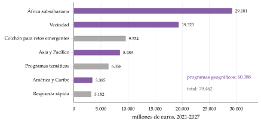
Fuente: elaboración propia a partir del art. 6 del Reglamento (UE) 2021/947. En morado, los programas geográficos (los de la vecindad y del África subsahariana son mínimos).
El FEDS+ (Fondo Europeo de Desarrollo Sostenible Plus), dentro del IVDCI: con la Garantía de Acción Exterior, de hasta 53.449 millones, el presupuesto cubre parte del riesgo de los préstamos e inversiones de los bancos de desarrollo, provisionándolo entre el 9 y el 50 %; se espera que movilice hasta 232.000 millones de inversión en 2021-2027. Es el paso de las donaciones a la movilización de inversión privada, con el BEI Global y los bancos de desarrollo de los Estados (en España, COFIDES y la AECID) [ver tema 4.A.24].
El Equipo Europa (2020, nacido con la respuesta a la covid-19): la Comisión, los Estados, sus agencias y sus bancos de desarrollo (BEI, BERD) presentan una oferta conjunta en cada país, con iniciativas Equipo Europa sobre los mismos objetivos. Es la vieja aspiración de coordinar 28 políticas, con más visibilidad.
Global Gateway (diciembre de 2021), la estrategia de inversión en infraestructuras digitales, de energía y clima, transporte, salud y educación, con 300.000 millones de euros movilizados en 2021-2027 por el Equipo Europa (donaciones, garantías del FEDS+ y préstamos de los bancos europeos):
en octubre de 2025 la Comisión dio por cumplido el objetivo antes de tiempo, con 306.000 millones movilizados en 2021-2024, y espera superar los 400.000 millones en 2027;
tiene paquetes regionales, como los de África (150.000 millones) y América Latina y el Caribe (45.000 millones), y proyectos como corredores de transporte, cables submarinos o el hidrógeno verde;
su crítica: son cifras de inversión «movilizada» (comprometida y apalancada), no de dinero desembolsado ni adicional, y mezclan ayuda con intereses europeos (materias primas críticas, contratos para empresas europeas).
La ayuda humanitaria, gestionada por la DG ECHO con organizaciones socias (ONG, agencias de las Naciones Unidas, Cruz Roja): 11.569 millones en 2021-2027 y un presupuesto inicial de 1.900 millones en 2026, que suele crecer durante el año (2.620 millones en 2022). Se rige por el Reglamento 1257/96 y por el Consenso Europeo sobre la Ayuda Humanitaria (2007).
El comercio: el Sistema de Preferencias Generalizadas (estándar, SPG+ y Todo menos armas) y los acuerdos de asociación económica [ver tema 3.B.41].
III.2.5. Retos de futuro
La eficacia: la Unión suscribe los principios de París (2005) y fue de las primeras en programar con los demás donantes (III.1.2) [ver tema 3.B.29]. Sus problemas conocidos son la fragmentación (28 políticas), la lentitud y el uso de la ayuda con fines migratorios.
De la ayuda a las asociaciones: Global Gateway y el FEDS+ usan la ayuda para atraer inversión, en competencia con la Iniciativa de la Franja y la Ruta china. Es más eficaz para infraestructuras en países de renta media que para los más pobres, donde no hay proyectos rentables que apalancar.
La propuesta para 2028-2034 (julio de 2025): un solo instrumento, Europa Global, de unos 200.000 millones de euros (el 0,14 % de la RNB de la Unión), que fusiona el IVDCI, la preadhesión y la ayuda humanitaria (hasta 25.000 millones), con Ucrania aparte, en una reserva propia:
se organiza por regiones (Europa ampliada y Este; Oriente Próximo, norte de África y Golfo; África subsahariana; Asia y el Pacífico; América y el Caribe), con un pilar mundial y un colchón mayor;
baja el mínimo de AOD del 93 al 90 % y quita los suelos de gasto en clima, desarrollo humano y migración: más flexibilidad y más peso de los intereses de la Unión, menos foco en la pobreza;
se negocia con el resto del marco, que el Consejo Europeo quiere cerrar a finales de 2026 [ver tema 3.B.37].
España: dio 4.554 millones de euros de AOD en 2025, el 0,27 % de su RNB, la cifra más alta en 15 años. La Ley 1/2023 de Cooperación para el Desarrollo Sostenible y la Solidaridad Global fija el 0,7 % para 2030 y al menos el 10 % para la acción humanitaria, y crea el Fondo Español de Desarrollo Sostenible (FEDES), adscrito a la AECID, que sustituye al FONPRODE para la cooperación financiera; el Plan Director 2024-2027 la desarrolla. La AECID es socia habitual de la Comisión en la cooperación delegada y en las iniciativas Equipo Europa [ver tema 4.A.26].
Recapitulación: la Unión es el primer donante del mundo y tiene una política propia, con un gran instrumento único desde 2021; pero su ayuda se mezcla cada vez más con sus intereses (migración, materias primas, geopolítica), y su volumen depende de unos Estados que recortan.
Conclusión
Recapitulación: En conclusión, las relaciones económicas exteriores de la Unión son un conjunto de políticas con una base jurídica común, muchos actores y un poder sobre todo económico: el mercado, las normas, el dinero y una moneda que es la segunda del mundo.
Las aplica por círculos: la adhesión condicionada con los candidatos, que funciona si es creíble y cercana; el mercado y el dinero a cambio de reformas con los vecinos; acuerdos y sanciones, como el tope al petróleo ruso, con los grandes socios; y en las organizaciones internacionales pesa más donde tiene competencias.
Con los países en desarrollo es el primer donante del mundo, con una política que pasa de la ayuda a la inversión y que debería repartirse donde más pobreza reduce.
Relevancia:
En un mundo de bloques y aranceles, la acción exterior es la que decide si la Unión es un actor o un escenario; para España, es la vía de su política hacia el Mediterráneo, América Latina y África.
Extensiones:
La política comercial [ver tema 3.B.41]; la financiación del desarrollo y la eficacia de la ayuda [ver tema 3.B.29]; los bancos de desarrollo [ver tema 3.B.30]; el presupuesto y el marco 2028-2034 [ver tema 3.B.37]; el papel internacional del euro [ver tema 3.B.43]; la cooperación española y sus instrumentos financieros [ver tema 4.A.26] [ver tema 4.A.24].
Opinión:
La Unión tiene más poder del que usa y menos del que cree: su fuerza son su mercado y sus normas, pero no tiene una sola voz y depende de la unanimidad. Su mejor política exterior ha sido la ampliación, y la apuesta de esta década, Ucrania, Moldavia y los Balcanes, solo saldrá bien si la promesa es creíble y la Unión se reforma para recibirlos.
Idea final:
Volvamos al refrán: más vale vecino cercano que hermano lejano. Cuando el hermano lejano sube sus aranceles y recorta su ayuda, la Unión descubre que su fuerza está en sus vecinos y en sus socios.
Por eso su peso económico le sirve para algo más que comerciar: para convertir a sus vecinos en miembros, a sus socios en aliados y a los países pobres en mercados que crecen. Pero solo si cumple lo que promete.
A. Anexo: 3 modelos de la acción exterior
Notación. En el efecto Bruselas, \(M_{UE}\) y \(M_R\) son las ventas de una empresa en la Unión y en el resto del mundo, \(c\) el coste por unidad de cumplir la norma europea y \(F\) el coste fijo de mantener 2 líneas de producción. En la condicionalidad, \(B\) es el valor de la adhesión para el candidato, \(p\) la probabilidad de que llegue (credibilidad), \(T\) los años que faltan, \(\delta\) el factor de descuento, \(C\) el coste interno de las reformas y \(g\) las recompensas intermedias. En el reparto de la ayuda, \(A_i\) es la ayuda al país \(i\) y \(m_i\) la reducción marginal de la pobreza.
A.1. El efecto Bruselas
a) Idea
La Unión no tiene un gran ejército ni la moneda dominante, pero fija normas que se aplican en todo el mundo: la protección de datos, la seguridad de los productos químicos, los alimentos o la competencia digital.
Bradford (2012) llamó efecto Bruselas a esa exportación unilateral de normas: la Unión no las negocia con nadie; son las empresas las que deciden aplicarlas en todas partes porque les sale más barato que tener 2 versiones de su producto.
Es la versión económica del poder normativo de la Unión (normative power Europe), un poder de atracción y no de coerción, como el poder blando (soft power) de Nye (2004).
b) Modelo
i) Supuestos
Una empresa vende \(M_{UE}\) unidades en la Unión y \(M_R\) en el resto del mundo, con un margen por unidad \(\pi\) antes de cumplir normas.
La Unión impone una norma más estricta que la del resto del mundo: cumplirla cuesta \(c\) por unidad.
2 opciones de producción: una sola línea con la norma europea para todo el mundo, o 2 líneas (la europea y la menos exigente), con un coste fijo adicional \(F\) (diseño, procesos, cumplimiento y control separados).
La norma afecta a un objetivo poco móvil: el consumidor europeo (no la empresa) es el que está en la Unión, y la empresa no puede venderle desde fuera sin cumplirla.
ii) Desarrollo
Paso 1: ¿se queda la empresa en el mercado europeo?
Sí, si lo que gana allí cubre el coste de cumplir: \((\pi-c)\,M_{UE}\geq0\). Con un mercado grande y rico, casi siempre es así.
Paso 2: ¿una línea o 2?
Con una sola línea europea, paga \(c\) también por lo que vende fuera: un coste \(c\,M_R\).
Con 2 líneas, se ahorra ese coste pero paga \(F\).
Paso 3: la regla. La empresa adopta la norma europea en todo el mundo si
\[\text{efecto Bruselas}\iff F> c\,M_R\tag{1}\]
es decir, si producir por separado cuesta más que cumplir la norma también fuera (gráfico 6).
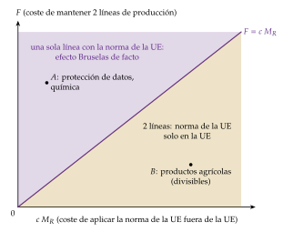
Fuente: elaboración propia a partir de Bradford (2012).
iii) Implicaciones
Las 5 condiciones de Anu Bradford salen del modelo:
un mercado grande (\(M_{UE}\) alto: nadie renuncia a él);
capacidad reguladora (instituciones que hacen y aplican normas complejas);
normas estrictas (si fueran laxas, no habría nada que exportar);
objetivos poco móviles (se regula al consumidor, no al capital, que se iría);
indivisibilidad de la producción (\(F\) alto).
Del efecto de hecho al de derecho: cuando las empresas ya cumplen la norma europea, les interesa que su país la adopte para no estar en desventaja frente a sus competidores locales; así se extendió el Reglamento General de Protección de Datos (RGPD) a otras legislaciones.
Lo que explica: por qué la Unión influye más con sus normas que con su política exterior clásica.
c) Extensiones
La geoeconomía: desde 2020 la Unión usa su mercado también como palanca defensiva, con instrumentos como el anticoerción (2023), el control de inversiones extranjeras o el mecanismo de ajuste en frontera por carbono, que mezclan la lógica del efecto Bruselas con la de la seguridad económica [ver tema 3.B.41] [ver tema 3.B.31].
d) Evidencia empírica
Casos: tras el RGPD (2018), grandes empresas tecnológicas extendieron sus protecciones a todos sus usuarios, y muchos países (Japón, Brasil, Corea) adoptaron leyes inspiradas en él; lo mismo ocurrió con el reglamento de sustancias químicas REACH (2007).
Límites: en la regulación digital más reciente, algunas empresas han preferido no ofrecer en la Unión ciertos servicios, y Estados Unidos ha respondido con presiones comerciales: la segmentación aparece cuando \(F\) es bajo.
e) Valoración
Lo que aporta: explica con 2 costes un poder que no se ve en las estadísticas del comercio.
Sus límites:
el poder depende del tamaño del mercado, y el peso de la Unión en el PIB mundial baja;
normas demasiado estrictas pueden frenar la innovación en la propia Unión, como advirtió el informe Draghi (2024) [ver tema 3.B.39];
y no sirve donde lo que cuenta es la fuerza: la seguridad, la energía o las materias primas críticas.
A.2. La condicionalidad de la adhesión
a) Idea
La ampliación es la política exterior que mejor ha funcionado: transformó en 15 años las economías y las instituciones de Europa central y oriental. Su mecanismo es la condicionalidad: la Unión ofrece una recompensa muy grande (la adhesión) a cambio de reformas, y solo la da cuando están hechas.
Schimmelfennig y Sedelmeier (2004) lo formalizaron en el modelo de los incentivos externos: un gobierno adopta las reglas de la Unión si los beneficios de la recompensa superan los costes internos de adoptarlas.
Para la economía es, además, un mecanismo de compromiso: atar las reformas a un ancla exterior las hace creíbles ante inversores y votantes, como la independencia del banco central ata la política monetaria [ver tema 3.A.38].
b) Modelo
i) Supuestos
el gobierno de un país candidato decide si hace una reforma con un coste interno \(C\) (rentas que pierden los grupos con poder de veto, coste político);
si la hace, la adhesión llega dentro de \(T\) años con probabilidad \(p\), la credibilidad de la promesa de la Unión; vale \(B\) para el gobierno (fondos, mercado, seguridad, votos);
el gobierno descuenta el futuro con un factor \(\delta<1\);
la Unión puede dar además recompensas intermedias \(g\), ligadas a cada reforma y pagadas antes de la adhesión.
ii) Desarrollo
Paso 1: sin recompensas intermedias, el gobierno reforma si el valor esperado y descontado de la adhesión cubre el coste:
\[\text{reforma}\iff C\leq g+p\,\delta^{T}B\tag{2}\]
con \(g=0\) en este primer paso (gráfico 7).
Paso 2: el plazo. Si la adhesión se aleja (\(T\) sube), \(\delta^{T}\) cae y la recta \(C=p\,\delta^{T}B\) gira hacia abajo: reformas que antes compensaban dejan de hacerlo. Es la fatiga de la ampliación.
Paso 3: la credibilidad. Si la promesa no es creíble (\(p\) bajo, por los vetos de un Estado o por las dudas de la Unión), pasa lo mismo.
Paso 4: las recompensas intermedias. Con \(g>0\), la recta sube en paralelo y el país vuelve a reformar aunque la adhesión siga lejos.
iii) Implicaciones
la condicionalidad funciona si la recompensa es grande, creíble y cercana, y si el coste interno no es enorme;
explica el éxito de la ampliación de 2004, con una fecha y una promesa creíbles, y el estancamiento de los Balcanes tras 2003 (Salónica), con una promesa lejana y vetos bilaterales;
da sentido a la metodología de 2020 y al Plan de Crecimiento: pagar por reformas antes de la adhesión (\(g\)) y abrir el mercado único por partes es subir la recta cuando \(T\) es grande.
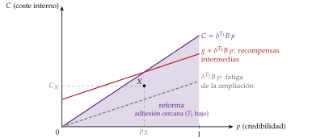
Fuente: elaboración propia a partir de Schimmelfennig y Sedelmeier (2004). El candidato \(X\) reforma con la adhesión cercana (\(T_1\)), deja de hacerlo si se aleja (\(T_2\)) y vuelve a reformar con recompensas intermedias (\(g\)).
c) Extensiones
La inconsistencia temporal: una vez dentro, la recompensa ya se ha cobrado y la Unión pierde la palanca. «Antes de meter, prometo; y una vez metido, olvido lo prometido», dice el refrán, y algo así ha pasado con el Estado de Derecho en algún Estado miembro tras su adhesión. Por eso la Unión ha añadido herramientas para después: el mecanismo de condicionalidad del Estado de Derecho del presupuesto (2020) y las salvaguardias que propone para los futuros tratados de adhesión.
La geopolítica: desde 2022 la ampliación se justifica también por la seguridad, lo que sube \(B\) para los candidatos y la credibilidad \(p\), pero puede tentar a la Unión a rebajar sus exigencias.
d) Evidencia empírica
Las reformas: los países de Europa central y oriental adoptaron el acervo más deprisa cuanto más creíble era su adhesión, y los que tenían gobiernos con más que perder (Eslovaquia de Mečiar, Croacia de Tuđman) se retrasaron hasta que cambiaron de gobierno.
El crecimiento: con el método del control sintético, Campos, Coricelli y Moretti (2019) estiman que la renta por habitante de los países que entraron entre 1973 y 2004 fue de media en torno a un 10 % más alta en los 10 años siguientes de lo que habría sido sin la adhesión, con la excepción de Grecia.
e) Valoración
Lo que aporta: explica con 3 variables (recompensa, credibilidad y plazo) por qué la ampliación transformó a unos países y no a otros.
Sus límites: trata al candidato como un actor único y racional, sin identidad ni opinión pública; y la credibilidad no es exógena, depende de la unanimidad de los 27.
A.3. El reparto eficiente de la ayuda
a) Idea
La ayuda al desarrollo hace crecer sobre todo a los países con buenas políticas, según el estudio de Burnside y Dollar (2000), muy discutido después [ver tema 3.B.29].
Collier y Dollar (2002) sacaron la consecuencia normativa: si un donante quiere reducir la pobreza lo más posible con un presupuesto dado, debe repartir la ayuda según la pobreza y la calidad de las políticas de cada país, y no según los lazos históricos o políticos. Es la base de la selectividad de la ayuda.
b) Modelo
i) Supuestos
Un donante (la Unión) reparte un presupuesto \(\bar A\) entre 2 países, \(A_1+A_2=\bar A\).
La ayuda reduce la pobreza en cada país con rendimientos decrecientes: la reducción marginal de la pobreza \(m_i(A_i)\) es decreciente en \(A_i\).
\(m_i\) es más alta donde hay más pobres y donde las políticas son mejores, porque allí la ayuda se convierte en más crecimiento y el crecimiento llega a más pobres.
ii) Desarrollo
Paso 1: el problema. El donante maximiza la reducción total de la pobreza: \[\begin{array}{rl}\displaystyle \max_{A_1,A_2} & \displaystyle \Pi_1(A_1)+\Pi_2(A_2) \\ \text{s.a.} & A_1+A_2=\bar A\end{array}\] donde \(\Pi_i\) es la reducción de la pobreza en el país \(i\) y \(m_i=\Pi_i'\).
Paso 2: la condición de primer orden. El reparto eficiente iguala la reducción marginal de la pobreza en los 2 países:
\[m_1(A_1^*)=m_2(A_2^*)\tag{3}\]
(punto \(E\) del gráfico 8).
Paso 3: el coste de repartir mal. Si el donante reparte por igual, o por lazos históricos, da de más a un país y de menos a otro, y deja de reducir la pobreza en el triángulo entre las 2 curvas.
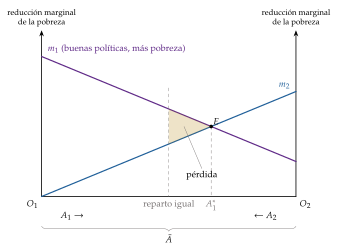
Fuente: elaboración propia a partir de Collier y Dollar (2002). El país 1, con más pobreza y mejores políticas, tiene una curva \(m_1\) más alta: en el óptimo \(E\) recibe más ayuda que con un reparto igual.
iii) Implicaciones
La ayuda debe ir a donde reduce más pobreza por euro: a países pobres y con buenas políticas, y retirarse poco a poco de los de renta media.
Con los datos de los 90, Collier y Dollar (2002) estimaron que la ayuda sacaba de la pobreza a unos 30 millones de personas al año y que, repartida de forma eficiente, sacaría a unos 80 millones: los países con pobreza severa y políticas aceptables tenían el 74 % de los pobres y recibían el 56 % de la ayuda.
Para la Unión, explica 2 debates: el peso de la vecindad y de los países de renta media en su ayuda, por razones geopolíticas, y la concentración en los países menos adelantados que piden sus compromisos.
c) Extensiones
La coordinación entre donantes: si cada donante reparte mirando solo su ayuda, el reparto conjunto es ineficiente y el receptor soporta los costes de tratar con muchos donantes pequeños (fragmentación). Coordinar a la Comisión y a los 27 en un solo programa por país (la programación conjunta y el Equipo Europa) es aplicar el modelo a todos los donantes europeos a la vez. Bigsten y Tengstam (2015) estiman que concentrar a cada donante europeo en menos países y pasar de proyectos a programas ahorraría muchos costes de transacción y reduciría más la pobreza, aunque choca con los intereses políticos de cada Estado.
d) Evidencia empírica
El resultado de Burnside y Dollar no es robusto: con más países y años desaparece, y el efecto medio de la ayuda sobre el crecimiento es positivo pero pequeño [ver tema 3.B.29].
El reparto real: la ayuda de los donantes responde tanto a los lazos coloniales y políticos como a la pobreza y las políticas del receptor; la de la Comisión va en buena parte a la vecindad y a Ucrania, países de renta media.
e) Valoración
Lo que aporta: una regla clara (igualar el efecto marginal) que da contenido a la palabra «eficacia».
Sus límites: depende de medir bien la calidad de las políticas, que es subjetiva; castiga a los países frágiles, donde la pobreza es mayor y las políticas peores; e ignora otros objetivos legítimos de la ayuda (humanitarios, de seguridad o de bienes públicos mundiales).
La lección: para William Easterly, más que repartir mejor desde arriba, la ayuda funciona cuando prueba, evalúa y responde ante los beneficiarios; es lo que pide la agenda de la eficacia de la ayuda, que la Unión ha hecho suya.
B. Anexo: de los Objetivos del Milenio a la Agenda 2030
Los Objetivos de Desarrollo del Milenio (2000-2015) concentraron la ayuda en la lucha contra la pobreza con 8 objetivos:
erradicar la pobreza extrema y el hambre;
lograr la enseñanza primaria universal;
promover la igualdad de género y la autonomía de la mujer;
reducir la mortalidad infantil;
mejorar la salud materna;
combatir el VIH/sida, el paludismo y otras enfermedades;
garantizar la sostenibilidad del medio ambiente;
fomentar una alianza mundial para el desarrollo.
La respuesta europea: en Monterrey (2002) la comunidad internacional se comprometió a dar más ayuda, y la Unión aprobó el Compromiso de Barcelona (marzo de 2002): un 0,39 % de la RNB colectiva en 2006, que se elevó en 2005 al 0,56 % en 2010 y al 0,7 % en 2015. La crisis impidió cumplirlo, y en 2015 el plazo pasó a 2030.
La Agenda 2030 (2015) y sus 17 Objetivos de Desarrollo Sostenible son universales, valen también para los países ricos, y unen la erradicación de la pobreza con la sostenibilidad social y ambiental; el Consenso Europeo de 2017 los traslada a la política de la Unión. 2015 fue el Año Europeo del Desarrollo.
C. Anexo: el reparto de competencias de la Unión
La regla de partida es la atribución: la Unión solo tiene las competencias que le dan los Tratados, y las demás siguen siendo de los Estados (arts. 4.1 y 5 TUE). El art. 2 TFUE las ordena en categorías según quién legisla, y los arts. 3 a 6 enumeran los ámbitos de cada una (figura 6). Las ejerce con proporcionalidad (no más de lo necesario) y, fuera de las exclusivas, con subsidiariedad (solo si el objetivo se alcanza mejor en común).
Exclusivas y compartidas: en las exclusivas (art. 3) solo legisla la Unión; los Estados, solo si ella los faculta o para aplicar sus actos. En las compartidas (art. 4), la categoría residual, legislan las 2, pero lo que regula un acto de la Unión deja de estar disponible para los Estados: es la preferencia u ocupación del campo (art. 2.2 y Protocolo n.º 25), que solo alcanza a lo que el acto regula. En investigación, espacio, cooperación para el desarrollo y ayuda humanitaria son paralelas: la acción de la Unión no impide la de los Estados (art. 4.3 y 4.4).
Coordinación y apoyo: en las políticas económicas y de empleo (art. 5) la política sigue siendo de los Estados y la Unión la coordina con orientaciones del Consejo; en los ámbitos del art. 6 (salud, industria, cultura, turismo, educación, protección civil, cooperación administrativa) la Unión solo apoya, coordina o complementa, sin armonizar las leyes nacionales. La PESC tiene un régimen propio, intergubernamental, con unanimidad y sin actos legislativos (art. 24 TUE).
Dónde está este tema: la acción exterior junta 3 categorías: la política comercial, exclusiva (art. 3.1.e); la cooperación para el desarrollo (arts. 208 a 211) y la ayuda humanitaria (art. 214), paralelas (art. 4.4), y la PESC, con su régimen propio (arts. 21 a 46 TUE).
Qué se deduce: por eso la Unión habla sola en comercio, convive con 27 políticas nacionales de desarrollo que deben coordinarse (art. 210) y decide la política exterior por unanimidad. La Alta Representante, a la vez en el Consejo y en la Comisión, es el puente entre esos regímenes.
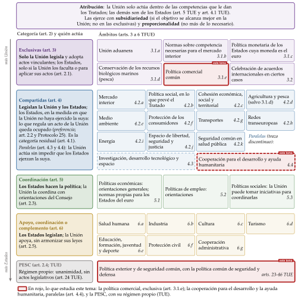
Fuente: elaboración propia a partir de los arts. 2 a 6 del TFUE y de los arts. 4, 5 y 24 del TUE.
D. Anexo: preguntas de test
Preguntas tipo test del primer ejercicio: simulador de test.
Bibliografía
Fuentes esenciales
Otras referencias
Daron Acemoglu, Simon Johnson y James A. Robinson recibieron el Premio Nobel de Economía en 2024 «por sus estudios sobre cómo se forman las instituciones y cómo afectan a la prosperidad».↩︎